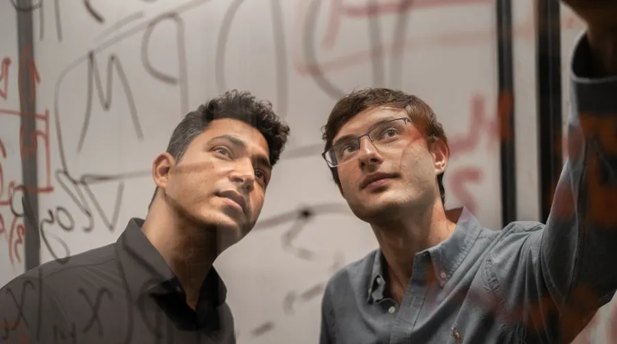

Decart's 10x GPU gains and million-user demo
Originally posted on LinkedIn, May 15, 2025.
Decart is the closest Israeli startup today to becoming an OpenAI-scale company. With more than a million users in 3 days and a breakthrough in the efficient use of AI processors, its two Unit 8200 alumni founders are already on that path.
The company raised $53 million in just two months at a valuation of half a billion dollars. Founded in 2023 by Dean Leitersdorf and Moshe Shalev, Decart is one of the most interesting technical companies to come out of Israel recently.
Leitersdorf, Decart's CEO, completed a PhD in computer science at the Technion at age 23. Shalev grew up in an ultra-Orthodox family in Bnei Brak and served in Unit 8200 through a military recruitment program for ultra-Orthodox men. That is where they met.
Their generative model, Oasis, creates interactive visual worlds in real time, including graphics, physics, and content. It does this without a game engine, graphic designers, or programmers.
Decart's technology manages GPU resources with unusual efficiency. It delivers a 10x improvement in model training and inference efficiency compared with the industry standard. That means lower costs, less time, and the ability to run complex models even on relatively weak devices.
To demonstrate the system, the team built a real-time Minecraft-style game that runs in the browser and generates a virtual world as the player moves through it. More than a million people used it in just 3 days, with no marketing and no large team. The live product demonstration was enough.
Decart already generates millions of dollars in revenue from enterprise customers. Its stated goal is to become a "kilocorn," a company worth a trillion dollars.
This is not another gaming platform. It is a different way to generate interactive software, and Decart is currently the Israeli startup closest to putting Israel on the global GenAI map.
